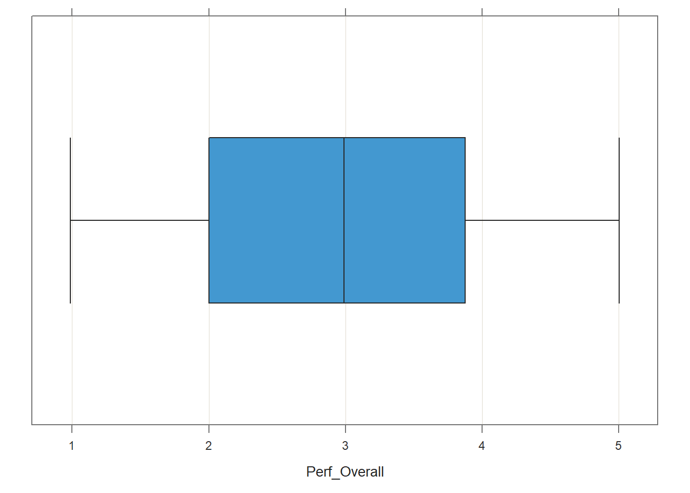
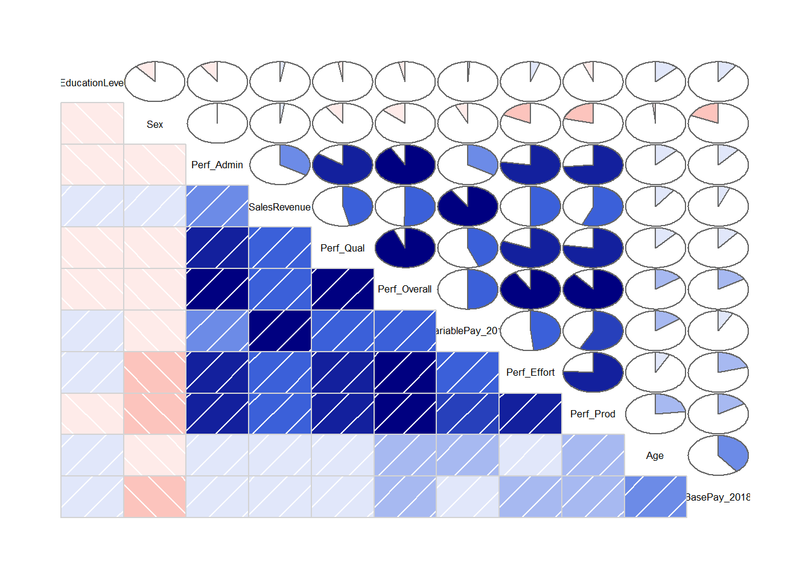

Chapter 51 Evaluating Convergent & Discriminant Validity Using Scatter Plots & Correlations
In this chapter, we will learn how to generate scatter plots, estimate Pearson product-moment and point-biserial correlations, and create a correlation matrix to evaluate the convergent validity and discriminant validity of a performance measure.
51.1 Conceptual Overview
In this section, first, well begin by reviewing concurrent and discriminant validity. Second, we review the Pearson product-moment correlation and point-biserial correlation, and well discuss the statistical assumptions that should be satisfied prior to estimating and interpreting both types of correlations as well as statistical significance and and practical significance in the context of these two correlations. The section will wrap up with a sample-write up of a correlation when used to estimate the criterion-related validity of a selection tool. Finally, we will describe the data visualization called a bivariate scatter plot and how it can be used to understand the association between two continuous (interval, ratio) variables.
51.1.1 Review of Concurrent & Discriminant Validity
To understand concurrent and discriminant validity, we first need to define criterion-related validity, where criterion-related validity (criterion validity) refers to the association between a variable and some outcome variable or correlate. The term criterion can be thought of as some outcome or correlate of practical or theoretical interest.
Convergent validity is a specific type of criterion-related validity in which the criterion of interest is conceptually similar to the focal variable, such that we would expect for scores on two conceptually similar variables to be associated with one another. For example, imagine that supervisors customer service employees job performance using a behavioral performance evaluation tool. Given that these employees work in customer service, we would expect scores on the behavioral performance evaluation tool to correlate with a measure that assesses a conceptually similar construct like, say, customer satisfaction ratings. In other words, we would expect for the performance evaluation tool and customer satisfaction ratings to show evidence of convergent validity.
Unlike convergent validity, we would find evidence of discriminant validity when scores on a conceptually dissimilar criterion are not associated with the focal variable. For example, we would not expect scores on a tool designed to measure job performance to correlate strongly with employee sex assuming that the tool was intended to be bias free.
51.1.2 Review of Pearson Product-Moment & Point-Biserial Correlation
A correlation represents the sign (i.e., direction) and magnitude (i.e., strength) of an association between two variables. Correlation coefficients can range from -1.00 to +1.00, where zero (.00) represents no association, -1.00 represents a perfect negative (inverse) association, and +1.00 represents a perfect positive association. When estimated using data acquired from a criterion-related validation study, a correlation coefficient can be referred to as a validity coefficient.
There are different types of correlations we can estimate, and their appropriateness will depend on the measurement scales of the two variables. For instance, the Pearson product-moment correlation is used when both variables are continuous (i.e., have interval or ratio measurement scales), whereas the point-biserial correlation is used when one variable is continuous and the other is truly dichotomous (e.g., has a nominal measurement scale with just two levels or categories) and by truly dichotomous, I mean that there is no underlying continuum between the two components of the binary. If we assign numeric values to the two levels of the dichotomous variable (e.g., 0 and 1), then the point-biserial correlation will be mathematically equivalent to a Pearson product moment correlation.
A Pearson product-moment correlation coefficient (\(r_{pm}\)) for a sample can be computed using the following formula:
\(r_{pm} = \frac{\sum XY - \frac{(\sum X)(\sum Y)}{n}} {\sqrt{(\sum X^{2} - \frac{\sum X^{2}}{n}) (\sum Y^{2} - \frac{\sum Y^{2}}{n})}}\)
where \(X\) refers to scores from one variable and \(Y\) refers to scores from the other variable, \(n\) refers to the sample size (i.e., the number of pairs of data corresponding to the number of cases with complete data).
If we assign numeric values to both levels of the dichotomous variable (e.g., 0 and 1), then we could use the formula for a Pearson product-moment correlation to calculate a point-biserial correlation. If, however, the two levels of the dichotomous variable are still non-numeric, then we can calculate a point-biserial correlation coefficient (\(r_{pb}\)) for a sample using the following formula:
\(r_{pb} = \frac{M_1 - M_0}{s_N} \sqrt{pq}\)
where \(M_1\) refers to mean score on the continuous (interval, ratio) variable for just the subset of cases with a score of 1 on the dichotomous variable; \(M_0\) refers to mean score on the continuous (interval, ratio) variable for just the subset of cases with a score of 0 on the dichotomous variable; \(s_N\) refers to the standard deviation for the continuous (interval, ratio) variable for the entire sample; \(p\) refers to the proportion of cases with a score of 0 on the dichotomous variable; and \(q\) refers to the proportion of cases with a score of 1 on the dichotomous variable.
51.1.2.1 Statistical Assumptions
The statistical assumptions that should be met prior to estimating and/or interpreting a Pearson product-moment correlation include:
- Cases are randomly sampled from the population, such that the variable scores for one individual are independent of the variable scores of another individual;
- Each variable shows a univariate normal distribution;
- Each variable is free of univariate outliers, and together the variables are free of bivariate outliers;
- Variables demonstrate a bivariate normal distribution - meaning, each variable is normally distributed at each level/value of the other variable. Often, this roughly takes the form of an ellipse shape, if you were to superimpose an oval that would fit around most cases in a bivariate scatter plot;
- The association between the two variables is linear.
The statistical assumptions that should be met prior to estimating and/or interpreting a point-biserial correlation include:
- Cases are randomly sampled from the population, such that the variable scores for one individual are independent of the variable scores of another individual;
- One of the variables is continuous (i.e., has an interval or ratio measurement scale);
- One of the variables is dichotomous (i.e., binary);
- The continuous variable shows a univariate normal distribution at each level of the dichotomous variable;
- The variance of the continuous variable is approximately equal for each level of the dichotomous variable;
- The continuous variable is free of univariate outliers at each level of the dichotomous variable.
Note: Regarding the first statistical assumption (i.e., cases randomly sampled from population), we will assume in this chapters data that this is not an issue. If we were to suspect, however, that there were some clustering or nesting of cases in units/groups (e.g., by supervisors, units, or facilities) with respect to our variables, then we would need to run some type of multilevel model (e.g., hierarchical linear model, multilevel structural equation model), which is beyond the scope of this tutorial. An intraclass correlation (ICC) can be used to diagnose such nesting or cluster. Failing to account for clustering or nesting in the data can bias estimates of standard errors, which ultimately influences the p-values and inferences of statistical significance.
51.1.2.2 Statistical Significance
The significance level of a correlation coefficient is determined by the sample size and the magnitude of the correlation coefficient. Specifically, a t-statistic with N-2 degrees of freedom (df) is calculated and compared to a Students t-distribution with N-2 df and a given alpha level (usually two-tailed, alpha = .05). If the calculated t-statistic is greater in magnitude than the chosen t-distribution, we conclude that the population correlation coefficient is significantly greater than zero. We use the following formula to calculate the t-statistic:
\(t = \frac{r \sqrt{N-2}}{1-r^{2}}\)
where \(r\) refers to the estimated correlation coefficient and \(N\) refers to the sample size. Alternatively, the exact p-value can be computed using a statistical software program like R if we know the df and t-value.
In practice, however, we dont always report the associated t-value; instead, we almost always report the exact p-value associated with the t-value when reporting information about statistical significance. When using null hypothesis significance testing, we interpret a p-value that is less than our chosen alpha level (which is conventionally .05, two-tailed) to meet the standard for statistical significance. This means that we reject the null hypothesis that the correlation is equal to zero. By rejecting this null hypothesis, we conclude that the correlation is significantly different from zero. If the p-value is equal to or greater than our chosen alpha level (e.g., .05, two-tailed), then we fail to reject the null hypothesis that the correlation is equal to zero; meaning, we conclude that there is no evidence of linear association between the two variables.
51.1.2.3 Practical Significance
The size of a correlation coefficient can be described using qualitative labels, such as small, medium, and large. The quantitative values tied to such qualitative labels of magnitude should really be treated as context specific; with that said, there are some very general rules we can apply when interpreting the magnitude of correlation coefficients, which are presented in the table below (Cohen 1992). Please note that the r values in the table are absolute values, which means, for example, that correlation coefficients of .50 and -.50 would both have the same absolute value and thus would both be considered large.
| r | Description |
|---|---|
| .10 | Small |
| .30 | Medium |
| .50 | Large |
Some people like to also report the coefficient of determination as an indicator of effect size. The coefficient of determination is calculated by squaring the correlation coefficient to create r2. When multiplied by 100, the coefficient of determination (r2) can be interpreted as the percentage of variance/variability shared between the two variables, which is sometimes stated as follows: Variable \(X\) explains \(X\)% of the variance in Variable \(Y\) (or vice versa). Please note that we use the lower-case r in r2 to indicate that we are reporting the variance overlap between only two variables.
Note: Typically, we only interpret the practical significance of an effect if the effect was found to be statistically significant. The logic is that if an effect (e.g., association, difference) is not statistically significant, then we should treat it as no different than zero, and thus it wouldnt make sense to the interpret the size of something that statistically has no effect.
51.1.2.4 Sample Write-Up
Based on a sample of 95 employees (N = 95), we evaluated the convergent and discriminant validity of a performance evaluation tool designed to measure the construct of job performance for sales professionals. With respect to convergent validity, we found that the correlation between overall performance evaluation scores and sales revenue generated is statistically significant, as the p-value is less than the conventional two-tailed alpha level of .05 (r = 0.509, p < .001, 95% CI[.343, .644]). Further, because the correlation coefficient is positive, it indicates that there is a positive linear association between overall performance evaluation ratings and sales revenue generated. Using the commonly used thresholds in the table below, we can conclude that in terms of practical significance the correlation coefficient is large in magnitude. With respect to the 95% confidence interval, it is likely that the range from .343 to .644 contains the true (population) correlation; that is, the true (population) correlation coefficient is likely somewhere between medium and large in magnitude. Overall, the statistically significant and large-in-magnitude correlation between overall scores on the performance evaluation and sales revenue generated provides evidence of criterion-related validity and specifically evidence of convergent validity, as these two conceptually similar variables were indeed correlated to a statistically significant extent. With respect to discriminant validity, we found that the correlation between overall performance evaluation scores and employee sex was not statistically significant, as the p-value was greater than the conventional two-tailed alpha level of .05 (r = -.135, p = .193, 95% CI[-.327, .069]). This leads us to conclude that employees overall performance evaluation ratings are not associated with their sex to a statistical significant extent and, therefore, that there is evidence of discriminant validity.
51.1.3 Review of Bivariate Scatter Plot
The bivariate scatter plot (or scatterplot) is a useful data visualization display type when our goal is to visualize the association between two continuous (interval, ratio) variables. Each dot in a scatter plot represents an individual case (i.e., observation) from the sample, and the dots position on the graph represents the cases scores on the each of the variables. A bivariate scatter plot can help us understand whether the statistical assumption of bivariate normality has been met (such as for a Pearson product-moment correlation), and it can help us determine whether the two variables have a linear or nonlinear association.

The bivariate scatter plot is a type of data visualization that is indended to depict the nature of the association (or lack thereof) between two continuous (interval, ratio) variables. In this example, there appears to be a relatively strong, positive association between annual sales revenue generated and the amount of variable pay earned.
If a bivariate scatter plot is applied to a continuous (interval, ratio) and dichotomous variable, it will take on a qualitatively different appearance and conveys different information. Namely, as shown in the figure below, when a dichotomous variable is involved, the bivariate scatter plot will display two columns (or rows) of dots, each corresponding to a level of the dichotomous variable. In fact, we can use the plot to infer visually whether there might be differences in means for the continuous variable based on the two levels of the dichotomous variable.
The bivariate scatter plot can also be used to depict the nature of the association (or lack thereof) between a continuous (interval, ratio) variable and a dichotomous variable. In this example, one can imagine that the mean variable pay is higher for females compared to males.
To play around with examples of bivariate scatter plots based on simulated data, check out this free tool. The tool also does a nice job of depicting the concept of shared variance in the context of correlation (i.e., coefficient of determination) using a Venn diagram.
51.2 Tutorial
This chapters tutorial demonstrates how to evaluate evidence of concurrent and discriminant validity for a performance measure by using scatter plots, correlations, and a correlation matrix.
51.2.1 Video Tutorial
As usual, you have the choice to follow along with the written tutorial in this chapter or to watch the video tutorials below.
Link to video tutorial: https://youtu.be/VQDZctJn43o
Link to video tutorial: https://youtu.be/cEld0s-qpL4
Link to video tutorial: https://youtu.be/MfN8KGQU3MI
51.2.2 Functions & Packages Introduced
| Function | Package |
|---|---|
ScatterPlot |
lessR |
BoxPlot |
lessR |
drop_na |
tidyr |
nrow |
base R |
group_by |
dplyr |
summarize |
dplyr |
leveneTest |
car |
Correlation |
lessR |
as.numeric |
base R |
corr.test |
psych |
lowerCor |
psych |
write.csv |
base R |
51.2.3 Initial Steps
If you havent already, save the file called PerfMgmtRewardSystemsExample.csv into a folder that you will subsequently set as your working directory. Your working directory will likely be different than the one shown below (i.e., "H:/RWorkshop"). As a reminder, you can access all of the data files referenced in this book by downloading them as a compressed (zipped) folder from the my GitHub site: https://github.com/davidcaughlin/R-Tutorial-Data-Files; once youve followed the link to GitHub, just click Code (or Download) followed by Download ZIP, which will download all of the data files referenced in this book. For the sake of parsimony, I recommend downloading all of the data files into the same folder on your computer, which will allow you to set that same folder as your working directory for each of the chapters in this book.
Next, using the setwd function, set your working directory to the folder in which you saved the data file for this chapter. Alternatively, you can manually set your working directory folder in your drop-down menus by going to Session > Set Working Directory > Choose Directory. Be sure to create a new R script file (.R) or update an existing R script file so that you can save your script and annotations. If you need refreshers on how to set your working directory and how to create and save an R script, please refer to Setting a Working Directory and Creating & Saving an R Script.
# Set your working directory
setwd("H:/RWorkshop")Next, read in the .csv data file called PerfMgmtRewardSystemsExample.csv using your choice of read function. In this example, I use the read_csv function from the readr package (Wickham, Hester, and Bryan 2021). If you choose to use the read_csv function, be sure that you have installed and accessed the readr package using the install.packages and library functions. Note: You dont need to install a package every time you wish to access it; in general, I would recommend updating a package installation once ever 1-3 months. For refreshers on installing packages and reading data into R, please refer to Packages and Reading Data into R.
# Install readr package if you haven't already
# [Note: You don't need to install a package every
# time you wish to access it]
install.packages("readr")# Access readr package
library(readr)
# Read data and name data frame (tibble) object
PerfRew <- read_csv("PerfMgmtRewardSystemsExample.csv")## Rows: 95 Columns: 11## -- Column specification ------------------------------------------------------------------------------------
## Delimiter: ","
## chr (1): Sex
## dbl (10): EmpID, Perf_Qual, Perf_Prod, Perf_Effort, Perf_Admin, SalesRevenue, BasePay_2018, VariablePay_...##
## i Use `spec()` to retrieve the full column specification for this data.
## i Specify the column types or set `show_col_types = FALSE` to quiet this message.# Print the names of the variables in the data frame (tibble) object
names(PerfRew)## [1] "EmpID" "Perf_Qual" "Perf_Prod" "Perf_Effort" "Perf_Admin"
## [6] "SalesRevenue" "BasePay_2018" "VariablePay_2018" "Sex" "Age"
## [11] "EducationLevel"# Print variable type for each variable in data frame (tibble) object
str(PerfRew)## spec_tbl_df [95 x 11] (S3: spec_tbl_df/tbl_df/tbl/data.frame)
## $ EmpID : num [1:95] 1 2 3 4 5 6 7 8 9 10 ...
## $ Perf_Qual : num [1:95] 3 1 2 2 1 2 5 2 2 2 ...
## $ Perf_Prod : num [1:95] 3 1 1 3 1 2 5 1 3 2 ...
## $ Perf_Effort : num [1:95] 3 1 1 3 1 2 5 1 3 3 ...
## $ Perf_Admin : num [1:95] 4 1 1 1 1 3 5 1 2 2 ...
## $ SalesRevenue : num [1:95] 57563 54123 56245 58291 58354 ...
## $ BasePay_2018 : num [1:95] 53791 52342 50844 52051 48061 ...
## $ VariablePay_2018: num [1:95] 6199 1919 7507 6285 4855 ...
## $ Sex : chr [1:95] "Female" "Male" "Male" "Male" ...
## $ Age : num [1:95] 39 48 38 35 32 34 57 43 35 47 ...
## $ EducationLevel : num [1:95] 2 4 4 4 2 4 3 2 4 5 ...
## - attr(*, "spec")=
## .. cols(
## .. EmpID = col_double(),
## .. Perf_Qual = col_double(),
## .. Perf_Prod = col_double(),
## .. Perf_Effort = col_double(),
## .. Perf_Admin = col_double(),
## .. SalesRevenue = col_double(),
## .. BasePay_2018 = col_double(),
## .. VariablePay_2018 = col_double(),
## .. Sex = col_character(),
## .. Age = col_double(),
## .. EducationLevel = col_double()
## .. )
## - attr(*, "problems")=<externalptr># Print first 6 rows of data frame (tibble) object
head(PerfRew)## # A tibble: 6 x 11
## EmpID Perf_Qual Perf_Prod Perf_Effort Perf_Admin SalesRevenue BasePay_2018 VariablePay_2018 Sex Age
## <dbl> <dbl> <dbl> <dbl> <dbl> <dbl> <dbl> <dbl> <chr> <dbl>
## 1 1 3 3 3 4 57563 53791 6199 Female 39
## 2 2 1 1 1 1 54123 52342 1919 Male 48
## 3 3 2 1 1 1 56245 50844 7507 Male 38
## 4 4 2 3 3 1 58291 52051 6285 Male 35
## 5 5 1 1 1 1 58354 48061 4855 Female 32
## 6 6 2 2 2 3 57618 53386 4056 Male 34
## # ... with 1 more variable: EducationLevel <dbl># Print number of rows in data frame (tibble) object
nrow(PerfRew)## [1] 95There are 11 variables and 95 cases (i.e., employees) in the PerfRew data frame: EmpID, Perf_Qual, Perf_Prod, Perf_Effort, Perf_Admin, SalesRevenue, BasePay_2018, VariablePay_2018, Sex, Age, and EducationLevel. Per the output of the str (structure) function above, all of the variables except for Sex are of type integer (continuous: interval, ratio), and Sex is of type character (nominal, dichotomous). The Perf_Qual, Perf_Prod, Perf_Effort, and Perf_Admin variables reflect four subjective performance-evaluation rating dimensions (as rated by direct supervisors), where Perf_Qual refers to perceived performance quality, Perf_Prod refers to perceived productivity, Perf_Effort refers to perceived effort, and Perf_Admin refers to perceived performance on administrative duties; each dimension was rated on a 1-5 scale in which higher values indicate higher performance (1 = poor performance, 5 = exceptional performance. The SalesRevenue variable is a measure of objective performance, as it reflects the 2018 sales-revenue contributions made by employees (in USD). The BasePay_2018 variable reflects the amount of base pay earned by employees during 2018 (in USD), and the VariablePay_2018 variable reflects the amount of variable pay (e.g., sales commission, bonuses) earned by employees during 2018 (in USD). The Sex variable has two levels: Male and Female, and the Age variable contains each employees age as of December 31, 2018. Finally, EducationLevel is an ordinal variable in which 1 = has high school degree or GED, 2 = completed some college courses, 3 = has Associates degree, 4 = has Bachelors degree, and 5 = complete some graduate courses or graduate degree. Even though the EducationLevel variable technically has an ordinal measurement scale.
51.2.3.1 Create Composite Variable Based on Performance Evaluation Dimensions
Technically, each of these performance evaluation dimension variables has an ordinal measurement scale; however, because all four dimensions are intended to assess some aspect of the job performance domain, we will see if we might be justified in creating a composite variable that represents overall performance. In doing so, we will hopefully be able to make the argument that the overall performance composite variable has an interval measurement scale.
To determine whether it is appropriate to create a composite variable from the four performance evaluation dimensions, we will follow the logic of the chapter on creating a composite variable based on a multi-item measure. Because that chapter explains the logic and process in detail, we will breeze through the steps in this tutorial.
To get started, we will install and access the psych package using the install.packages and library functions, respectively (if you havent already done so).
# Install package
install.packages("psych")# Access package
library(psych)Now lets compute Cronbachs alpha for the four-item performance evaluation measure.
# Estimate Cronbach's alpha for the four-item Engagement measure
alpha(PerfRew[,c("Perf_Qual","Perf_Prod","Perf_Effort","Perf_Admin")])##
## Reliability analysis
## Call: psych::alpha(x = PerfRew[, c("Perf_Qual", "Perf_Prod", "Perf_Effort",
## "Perf_Admin")])
##
## raw_alpha std.alpha G6(smc) average_r S/N ase mean sd median_r
## 0.94 0.94 0.92 0.78 14 0.011 2.9 1.2 0.77
##
## lower alpha upper 95% confidence boundaries
## 0.91 0.94 0.96
##
## Reliability if an item is dropped:
## raw_alpha std.alpha G6(smc) average_r S/N alpha se var.r med.r
## Perf_Qual 0.90 0.90 0.86 0.76 9.3 0.017 0.00035 0.76
## Perf_Prod 0.93 0.93 0.90 0.81 12.7 0.013 0.00130 0.81
## Perf_Effort 0.92 0.92 0.89 0.78 10.9 0.015 0.00310 0.77
## Perf_Admin 0.91 0.91 0.88 0.78 10.7 0.015 0.00067 0.77
##
## Item statistics
## n raw.r std.r r.cor r.drop mean sd
## Perf_Qual 95 0.94 0.94 0.92 0.88 2.9 1.3
## Perf_Prod 95 0.89 0.89 0.83 0.81 2.9 1.3
## Perf_Effort 95 0.91 0.91 0.87 0.84 2.9 1.3
## Perf_Admin 95 0.92 0.92 0.88 0.85 2.9 1.3
##
## Non missing response frequency for each item
## 1 2 3 4 5 miss
## Perf_Qual 0.17 0.25 0.22 0.20 0.16 0
## Perf_Prod 0.17 0.27 0.24 0.17 0.15 0
## Perf_Effort 0.19 0.18 0.27 0.23 0.13 0
## Perf_Admin 0.16 0.26 0.22 0.20 0.16 0For all four dimensions, Cronbachs alpha is .94, which is great and indicates an acceptable level of internal consistency reliability for this multi-dimensional measure. The Reliability if an item is dropped table indicates that dropping any of the dimensions/items would decrease Cronbachs alpha, which would be undesirable. Given this, we will feel justified in creating a composite variable based the mean score across these four dimensions for each case. Lets name the composite variable Perf_Overall.
# Create composite (overall scale score) variable based on Engagement items
PerfRew$Perf_Overall <- rowMeans(PerfRew[,c("Perf_Qual","Perf_Prod","Perf_Effort","Perf_Admin")],
na.rm=TRUE)Now we have a variable called Perf_Overall that represents overall job performance, based on the supervisor ratings along the four dimensions. Further, we can argue that this new composite variable has an interval measurement scale.
51.2.3.2 Recode Employee Sex Variable
The dichotomous employee sex variable (Sex) currently has the following levels: Female and Male. To make this variable amenable to a point-biserial correlation, we will recode the Female as 1 and Male as 0. To do so, we will use the recode function from the dplyr package. I should note that there are other ways in which we could recode these values, and some of those approaches are covered in the chapter on data cleaning.
We will need to install and access the dplyr package using the install.packages and library functions, respectively (if you havent already done so).
# Install package
install.packages("dplyr")# Access package
library(dplyr)To use the recode function we will do the following:
- Specify the name of the data frame object (
PerfRew) followed by the$operator and the name of variable we wish to recode (Sex). In doing so, we will overwrite the existing variable calledSex. Follow this with the<-assignment operator. - Specify the name of the
recodefunction to the right of the<-assignment operator.
- As the first argument in the
recodefunction, specify the name of the the name of the data frame object (PerfRew) followed by the$operator and the name of variable we wish to recode (Sex). - As the second argument, type the name of one of the values we wish to change (Female), followed by the
=operator and what wed like to change that value to (1). Note: If we wished to change the value to a non-numeric text (i.e., character) value, then we would need to surround the new value in quotation marks (" "). - As the third argument, repeat the previous step for the second value we wish to change (Male = 0).
# Recode Female as 1 and Male as 0 for Sex variable
PerfRew$Sex <- recode(PerfRew$Sex,
Female = 1,
Male = 0)Weve successfully recoded the Sex variable! Just remember that 1 indicates Female and 0 indicates Male, as this will be important for interpreting a point-biserial correlation, should we estimate one.
51.2.4 Visualize Association Using a Bivariate Scatter Plot
A bivariate scatter plot can be used to visualize the association between two continuous (interval, ratio) variables. Lets create a bivariate scatter plot to visualize the association between the Perf_Prod (productivity) dimension of the performance evaluation tool and the SalesRevenue (sales revenue generated) variable, both of which are continuous.
The ScatterPlot function from the lessR package (Gerbing, Business, and University 2021) does a nice job generating scatter plots and it even provides an estimate of the correlation by default. If you havent already, install and access the lessR package.
# Install package
install.packages("lessR")# Access package
library(lessR)Lets start by visualizing the association between the overall performance evaluation composite variable (Perf_Overall) we created above and the criterion variable of sales revenue generated during the year (SalesRevenue). And lets imagine data frame (PerfRew) contains cases who are all sales professionals, and thus the amount of sales revenue generated should be indicator of job performance. Thus, we can argue that both the Perf_Overall and SalesRevenue variables are conceptually similar as they tap into key aspects of job performance for these sales professionals.
To begin, type the name of the ScatterPlot function. As the first two arguments of the function, well type the names of the two variables we wish to visualize: Perf_Overall and SalesRevenue. The variable name that we type after the x= argument will set the x-axis, and the variable name that we type after the y= argument will set the y-axis. Conventionally, we place the criterion variable on the y-axis, as it is the outcome. As the third argument, use the data= argument to provide the name of the data frame to which the two variables belong (PerfRew).
# Create scatter plot using ScatterPlot function from lessR
ScatterPlot(x=Perf_Overall, y=SalesRevenue, data=PerfRew)## >>> Suggestions
## Plot(Perf_Overall, SalesRevenue, enhance=TRUE) # many options
## Plot(Perf_Overall, SalesRevenue, color="red") # exterior edge color of points
## Plot(Perf_Overall, SalesRevenue, fit="lm", fit_se=c(.90,.99)) # fit line, stnd errors
## Plot(Perf_Overall, SalesRevenue, MD_cut=6) # label Mahalanobis dist > 6 as outliers
##
## >>> Pearson's product-moment correlation
##
## Number of paired values with neither missing, n = 95
## Sample Correlation of Perf_Overall and SalesRevenue: r = 0.509
##
## Hypothesis Test of 0 Correlation: t = 5.701, df = 93, p-value = 0.000
## 95% Confidence Interval for Correlation: 0.343 to 0.644In our plot window, we can see a fairly clear positive linear association between Perf_Overall and SalesRevenue. Further, the distribution is ellipse-shaped, which gives us some evidence that the underlying distribution between the two variables is likely bivariate normal thereby satisfying a key statistical assumption for a Pearson product-moment correlation. Note that the ScatterPlot function automatically provides an estimate of the correlation coefficient in the output (r = .509), along with the associated p-value (p < .001). Visually, this bivariate scatter plot provides initial evidence of convergent validity for these two variables.
51.2.4.1 Optional: Stylizing the ScatterPlot Function from lessR
If you would like to optionally stylize your scatter plot, we can use the xlab= and ylab= arguments to change the default names of the x-axis and y-axis, respectively.
# Optional: Styling the scatter plot
ScatterPlot(x=Perf_Overall, y=SalesRevenue, data=PerfRew,
xlab="Overall Performance Evaluation Score",
ylab="Annual Sales Revenue Generated ($)")## >>> Suggestions
## Plot(Perf_Overall, SalesRevenue, enhance=TRUE) # many options
## Plot(Perf_Overall, SalesRevenue, fill="skyblue") # interior fill color of points
## Plot(Perf_Overall, SalesRevenue, fit="lm", fit_se=c(.90,.99)) # fit line, stnd errors
## Plot(Perf_Overall, SalesRevenue, MD_cut=6) # label Mahalanobis dist > 6 as outliers
##
## >>> Pearson's product-moment correlation
##
## Number of paired values with neither missing, n = 95
## Sample Correlation of Perf_Overall and SalesRevenue: r = 0.509
##
## Hypothesis Test of 0 Correlation: t = 5.701, df = 93, p-value = 0.000
## 95% Confidence Interval for Correlation: 0.343 to 0.644We can also superimpose an ellipse by adding the argument ellipse=TRUE, which can visually aid our judgment on whether the distribution is bivariate normal.
# Optional: Styling the scatter plot
ScatterPlot(x=Perf_Overall, y=SalesRevenue, data=PerfRew,
xlab="Overall Performance Evaluation Score",
ylab="Annual Sales Revenue Generated ($)",
ellipse=TRUE)## [Ellipse with Murdoch and Chow's function ellipse from their ellipse package]## >>> Suggestions
## Plot(Perf_Overall, SalesRevenue, enhance=TRUE) # many options
## Plot(Perf_Overall, SalesRevenue, color="red") # exterior edge color of points
## Plot(Perf_Overall, SalesRevenue, fit="lm", fit_se=c(.90,.99)) # fit line, stnd errors
## Plot(Perf_Overall, SalesRevenue, out_cut=.10) # label top 10% from center as outliers
##
## >>> Pearson's product-moment correlation
##
## Number of paired values with neither missing, n = 95
## Sample Correlation of Perf_Overall and SalesRevenue: r = 0.509
##
## Hypothesis Test of 0 Correlation: t = 5.701, df = 93, p-value = 0.000
## 95% Confidence Interval for Correlation: 0.343 to 0.64451.2.5 Estimate Correlations
Now were ready to practice estimating Pearson product-moment and point-biserial correlations. For both, well work through the statistical assumptions along the way.
51.2.5.1 Estimate Pearson Product-Moment Correlation
Because both Perf_Overall and SalesRevenue are measures of job performance, we will consider them to be conceptually similar and even measures of the same overarching construct: job performance. Thus, we will investigate whether there is evidence of convergent validity between these two variables.
Given that both Perf_Overall and SalesRevenue are continuous variables, lets see if these two variables satisfy the statistical assumptions for estimating and interpreting a Pearson product-moment correlation.
Cases Are Randomly Sampled from the Population: As mentioned in the statistical assumptions section, we will assume that the cases (i.e., employees) were randomly sampled from the population, and thus conclude that this assumption has been satisfied.
Each Variable Shows a Univariate Normal Distribution: In accordance with the central limit theorem, a sampling distribution will tend to approximate a normal distribution when it is based on more than 30 cases (N > 30). Given that, well begin by checking to see how many cases have data for both continuous variables, and well use a combination of the drop_na function from the tidyr package (Wickham 2021a) and the nrow function from base R. First, if you havent already, install and access the tidyr package.
# Install package
install.packages("tidyr")# Access package
library(tidyr)First, using the drop_na function, as the first argument, type the name of the data frame object (PerfRew). As the second and third arguments, type the names of the two variables (Perf_Overall, SalesRevenue). Second, following the drop_na function, insert the pipe (%>%) operator. Finally, after the pipe (%>%) operator, type the nrow function without any arguments specified. This code will first create a new data frame (tibble) in which rows with missing data on either variable are removed, and then the number of rows in the new data frame (tibble) will be evaluated. Effectively, this code performs listwise deletion and tells us how many rows were retained after the listwise deletion. Because we arent assigning this data frame to an object, this is only a temporary data frame and not one that will become part of our Global Environment.
# Drop cases (rows) where either Perf_Overall or SalesRevenue
# have missing data (NAs) & pipe (%>%) the resulting data
# frame to the nrow function
drop_na(PerfRew, Perf_Overall, SalesRevenue) %>% nrow()## [1] 95After attempting to drop any rows with missing data (NAs), we find that the sample size is 95, which is the same as our original sample size. This indicates that we did not have any missing values on either of these variables.
Because 95 > 30, we can assume that the assumption of univariate normality has been met for both variables. To learn how to test this assumption if there are fewer than 30 cases in a sample, please see the end-of-chapter supplement.
Each Variable Is Free of Univariate Outliers: To visualize whether there are any univariate outliers for either variable, we will use the BoxPlot function from the lessR package to generate a box-and-whiskers plot (box plot). Lets start with the Perf_Overall variable, and enter it as the first argument in the BoxPlot function. As the second argument, type data= followed by the name of the data frame object (PerfRew).
# Create box plot
BoxPlot(Perf_Overall, data=PerfRew)## [Violin/Box/Scatterplot graphics from Deepayan Sarkar's lattice package]
## >>> Suggestions
## Plot(Perf_Overall, out_cut=2, fences=TRUE, vbs_mean=TRUE) # Label two outliers ...
## Plot(Perf_Overall, box_adj=TRUE) # Adjust boxplot whiskers for asymmetry## --- Perf_Overall ---
## Present: 95
## Missing: 0
## Total : 95
##
## Mean : 2.911
## Stnd Dev : 1.202
## IQR : 1.875
## Skew : 0.000 [medcouple, -1 to 1]
##
## Minimum : 1.000
## Lower Whisker: 1.000
## 1st Quartile : 2.000
## Median : 3.000
## 3rd Quartile : 3.875
## Upper Whisker: 5.000
## Maximum : 5.000
##
## No (Box plot) outliers
##
## Max Dupli-
## Level cations Values
## ------------------------------
## Perf_Overall 10 2.25If outliers or other influential cases were present, they would appear beyond the whiskers (i.e., outer bars) in the plot. No potential outliers were detected for Perf_Overall.
Now lets create a box plot for the SalesRevenue variable.
# Create box plot
BoxPlot(SalesRevenue, data=PerfRew)## [Violin/Box/Scatterplot graphics from Deepayan Sarkar's lattice package]
## >>> Suggestions
## Plot(SalesRevenue, out_cut=2, fences=TRUE, vbs_mean=TRUE) # Label two outliers ...
## Plot(SalesRevenue, box_adj=TRUE) # Adjust boxplot whiskers for asymmetry
## --- SalesRevenue ---
## Present: 95
## Missing: 0
## Total : 95
##
## Mean : 60852.88
## Stnd Dev : 6501.54
## IQR : 7734.50
## Skew : 0.04 [medcouple, -1 to 1]
##
## Minimum : 42512.00
## Lower Whisker: 48157.00
## 1st Quartile : 57027.00
## Median : 60779.00
## 3rd Quartile : 64761.50
## Upper Whisker: 73329.00
## Maximum : 76365.00
##
##
## (Box plot) Outliers: 2
##
## Small Large
## ----- -----
## 73 42512.0 50 76365.0
##
## Number of duplicated values: 0The box plot indicates that there may be two potential outliers, which appear in red beyond the whiskers of the plot. Generally, I recommend using caution when deciding whether to remove outlier cases, and I tend to err on the side of not removing outliers unless they are outlandishly separated from the other scores (e.g., +/- 3 standard deviations). If we did decide to remove these cases, then I would recommend running a sensitivity analysis, which means running the focal analysis with and without the cases included.
I think we can reasonably conclude that we have satisfied the assumption that the variables are (mostly) free of univariate outliers.
Association Between Variables Is Linear, Variables Demonstrate a Bivariate Normal Distribution, & Variables Are Free of Bivariate Outliers: To test these statistical assumptions, we will estimate a bivariate scatter plot using the same function as the previous section. Well add two additional arguments, though. First, lets add the ellipse=TRUE argument, which will superimpose an ellipse; this will facilitate our interpretation of whether there is a bivariate normal distribution. Second, lets add the out_cut=.05 argument, which will helps us visualize the top 5% of cases from the center that might be bivariate outliers.
# Create scatter plot using ScatterPlot function from lessR
ScatterPlot(x=Perf_Overall, y=SalesRevenue, data=PerfRew,
ellipse=TRUE,
out_cut=.05)## [Ellipse with Murdoch and Chow's function ellipse from their ellipse package]## >>> Suggestions
## Plot(Perf_Overall, SalesRevenue, enhance=TRUE) # many options
## Plot(Perf_Overall, SalesRevenue, fill="skyblue") # interior fill color of points
## Plot(Perf_Overall, SalesRevenue, fit="lm", fit_se=c(.90,.99)) # fit line, stnd errors
##
## >>> Pearson's product-moment correlation
##
## Number of paired values with neither missing, n = 95
## Sample Correlation of Perf_Overall and SalesRevenue: r = 0.509
##
## Hypothesis Test of 0 Correlation: t = 5.701, df = 93, p-value = 0.000
## 95% Confidence Interval for Correlation: 0.343 to 0.644## >>> Outlier analysis with Mahalanobis Distance
##
## MD ID
## ----- -----
## 9.57 73
## 7.45 50
## 6.14 15
## 5.18 13
## 5.04 66
##
## 4.85 54
## 4.81 90
## 4.43 48
## ... ...Again, it appears as though the association between the two variables is linear (as opposed to nonlinear). Further, the bivariate distribution seems to be normal, as it takes on more-or-less an ellipse shape. Finally, there may be a few potential bivariate outliers, but none of them look too out-of-bounds or too extreme; thus, lets conclude that none of these more extreme cases are extreme enough to warrant removal.
Overall, we can reasonably conclude that the statistical assumptions for a Pearson product-moment correlation have been satisfied.
Estimate Pearson Product-Moment Correlation: To estimate a Pearson product-moment correlation, well use the Correlation function from the lessR package. Conveniently, this function will take the same first three arguments as the ScatterPlot function.
# Estimate Pearson product-moment correlation using Correlation function from lessR
Correlation(x=Perf_Overall, y=SalesRevenue, data=PerfRew)## Correlation Analysis for Variables Perf_Overall and SalesRevenue
##
## >>> Pearson's product-moment correlation
##
## Number of paired values with neither missing, n = 95
## Number of cases (rows of data) deleted: 0
##
## Sample Covariance: s = 3976.099
##
## Sample Correlation: r = 0.509
##
## Hypothesis Test of 0 Correlation: t = 5.701, df = 93, p-value = 0.000
## 95% Confidence Interval for Correlation: 0.343 to 0.644Sample Technical Write-Up: Based on a sample of 95 employees (N = 95), we can conclude that the correlation between overall performance evaluation scores and sales revenue generated is statistically significant, as the p-value is less than the conventional two-tailed alpha level of .05 (r = 0.509, p < .001, 95% CI[.343, .644]). Further, because the correlation coefficient is positive, it indicates that there is a positive linear association between Perf_Overall and SalesRevenue. Using the commonly used thresholds in the table below, we can conclude that in terms of practical significance the correlation coefficient is large in magnitude, as its absolute value exceeds .50. With respect to the 95% confidence interval, it is likely that the range from .343 to .644 contains the true (population) correlation; that is, the true (population) correlation coefficient is likely somewhere between medium and large in magnitude. Overall, the statistically significant and large-in-magnitude correlation between overall scores on the performance evaluation and sales revenue generated provides evidence of criterion-related validity and specifically evidence of convergent validity, as these two conceptually related variables were indeed correlated to a statistically significant extent.
| r | Description |
|---|---|
| .10 | Small |
| .30 | Medium |
| .50 | Large |
51.2.5.2 Estimate Point-Biserial Correlation
Well shift gears and practice estimating the point-biserial correlation between the Perf_Overall continuous variable and the Sex dichotomous variable. Lets assume that the Perf_Overall variable is a measure of overall job performance for the employees in this sample and that employees sex should not have a bearing on the performance evaluation ratings they receive from their respective supervisors. Given that, we are looking to see if there is evidence of discriminant validity between these two conceptually distinguishable variables.
Before estimating their correlation, lets see if these two variables satisfy the statistical assumptions for estimating and interpreting a point-biserial correlation.
Cases Are Randomly Sampled from the Population: As mentioned in the statistical assumptions section, we will assume that the cases (i.e., employees) were randomly sampled from the population, and thus conclude that this assumption has been satisfied.
One of the Variables Is Continuous & One of the Variables Is Dichotomous: We can describe the Perf_Overall variable has having an interval measurement scale, and thus it is a continuous variable. We can describe the Sex variable as having a nominal measurement scale and specifically as being a dichotomous variable because it is operationalized as having two levels: 1 = Female, 0 = Male. We have satisfied both of these assumptions.
The Continuous Variable Variable Shows a Univariate Normal Distribution at Each Level of the Dichotomous Variable: In accordance with the central limit theorem, a sampling distribution will tend to approximate a normal distribution when it is based on more than 30 cases (N > 30). Lets figure out if the number of cases at each level of the dichotomous variable exceeds 30.
- Using the
drop_nafunction from thetidyrpackage:
- As the first argument, type the name of the data frame object (
PerfRew). - As the second and third arguments, type the names of the two variables (
Perf_Overall,Sex).
- Following the
drop_nafunction, insert the pipe (%>%) operator. This will pipe the data frame object (tibble) created by thedrop_nafunction to the subsequent function. - After the pipe (%>%) operator, type the name of the
group_byfunction from thedplyrpackage, and as the sole argument, insert the name of the dichotomous variable (Sex). - Following the
group_byfunction, insert another pipe (%>%) operator. - After the pipe (%>%) operator, type the name of the
summarizefunction from thedplyrpackage, and as the sole argument, type the name of some new variable that will contain the counts (e.g.,count) followed by the=operator and thenfunction fromdplyr. Do not include any arguments in thenfunction.
Note: If youd like a refresher on aggregating and segmenting data, check out the chapter that covers those operations.
# Drop cases (rows) where either Perf_Overall or Sex
# have missing data (NAs),
# pipe (%>%) the resulting data
# frame to the group_by function, &
# compute the counts for each level
# of the Sex variable
drop_na(PerfRew, Perf_Overall, Sex) %>%
group_by(Sex) %>%
summarize(count = n())## # A tibble: 2 x 2
## Sex count
## <dbl> <int>
## 1 0 54
## 2 1 41As shown in the resulting table, there are more than 30 cases for each level of the dichotomous Sex variable.
Thus, we can assume that the assumption of univariate normality has been met for the continuous variable at both levels of the dichotomous variable. To learn how to test this assumption if there are fewer than 30 cases in each sub-sample, please see the end-of-chapter supplement.
Continuous Variable Is Free of Univariate Outliers: To visualize whether there are any univariate outliers for either variable, we will use the BoxPlot function from the lessR package to generate a box-and-whiskers plot (box plot). Type the name of the Perf_Overall variable as the first argument in the BoxPlot function, and as the second argument, type data= followed by the name of the data frame object (PerfRew).
# Create box plot
BoxPlot(Perf_Overall, data=PerfRew)## [Violin/Box/Scatterplot graphics from Deepayan Sarkar's lattice package]
## >>> Suggestions
## Plot(Perf_Overall, out_cut=2, fences=TRUE, vbs_mean=TRUE) # Label two outliers ...
## Plot(Perf_Overall, box_adj=TRUE) # Adjust boxplot whiskers for asymmetry
## --- Perf_Overall ---
## Present: 95
## Missing: 0
## Total : 95
##
## Mean : 2.911
## Stnd Dev : 1.202
## IQR : 1.875
## Skew : 0.000 [medcouple, -1 to 1]
##
## Minimum : 1.000
## Lower Whisker: 1.000
## 1st Quartile : 2.000
## Median : 3.000
## 3rd Quartile : 3.875
## Upper Whisker: 5.000
## Maximum : 5.000
##
## No (Box plot) outliers
##
## Max Dupli-
## Level cations Values
## ------------------------------
## Perf_Overall 10 2.25If outliers or other influential cases were present, they would appear beyond the whiskers (i.e., outer bars) in the plot. No potential outliers were detected for Perf_Overall, which indicates that we have satisfied the statistical assumption that the continuous variable is free of univariate outliers.
The Variance of the Continuous Variable Is Approximately Equal for Each Level of the Dichotomous Variable: To test this statistical assumption, we will perform a statistical test called Levenes test using the leveneTest function from the car package (Fox and Weisberg 2019). This function will allow us to test whether we can assume the variances to be approximately equal, which is sometimes referred to as homogeneity of variances.
If you havent already, install and access the car package.
# Install package
install.packages("car")# Access package
library(car)Type the name of the leveneTest function. As the first argument, specify the statistical model. To do so, type the name of the continuous variable (Perf_Overall) to the left of the ~ operator and the name of the dichotomous variable (Sex) to the right of the ~ operator. This function requires that the variable to the right of the ~ operator is non-numeric, so lets wrap the Sex variable in the as.factor function from base R to convert the dichotomous variable to a non-numeric factor within the leveneTest function; this will not permanently change the Sex variable to a factor, though. For the second argument, use data= to specify the name of the data frame (PerfRew).
# Compute Levene's test for equal variances
leveneTest(Perf_Overall ~ as.factor(Sex), data=PerfRew)## Levene's Test for Homogeneity of Variance (center = median)
## Df F value Pr(>F)
## group 1 2.3502 0.1287
## 93This function tests the null hypothesis that the variances are equal, and the output indicates that the p-value (i.e., Pr(>F) = .1287) associated with Levenes test is equal to or greater than a two-tailed alpha level of .05. Thus, we fail to reject the null hypothesis that the variances are equal and thus conclude that the variances are equal. We have satisfied this statistical assumption.
Overall, we can reasonably conclude that the statistical assumptions for a point-biserial correlation have been satisfied.
Estimate Point-Biserial Correlation: Fortunately, because a point-biserial correlation is equal to a Pearson product-moment correlation when the dichotomous variable has been converted to quantitative values, we can use the same Correlation function from the lessR package that we used for estimating the Pearson product-moment correlation.
# Estimate point-biserial / Pearson product-moment correlation using Correlation function from lessR
Correlation(x=Perf_Overall, y=Sex, data=PerfRew)## Correlation Analysis for Variables Perf_Overall and Sex
##
## >>> Pearson's product-moment correlation
##
## Number of paired values with neither missing, n = 95
## Number of cases (rows of data) deleted: 0
##
## Sample Covariance: s = -0.081
##
## Sample Correlation: r = -0.135
##
## Hypothesis Test of 0 Correlation: t = -1.312, df = 93, p-value = 0.193
## 95% Confidence Interval for Correlation: -0.327 to 0.069Sample Technical Write-Up: Based on a sample of 95 employees (N = 95), we can conclude that the correlation between overall performance evaluation scores and employee sex is not statistically significant, as the p-value was greater than the conventional two-tailed alpha level of .05 (r = -.135, p = .193, 95% CI[-.327, .069]). This leads us to conclude that employees overall performance evaluation ratings are not associated with their sex. Thus, we found evidence of discriminant validity, as these two conceptually dissimilar variables were not found to be correlated.
51.2.6 Create Correlation Matrix
When we have a large number of variables for which we wish to evaluate convergent and discriminant validity, often it makes sense to create a correlation matrix as opposed to estimating the correlation for each pair of variables one by one. There are different functions we can use to create a correlation matrix for a set of numeric variables. Here, we will learn how to use thecorr.test and lowerCor functions from the psych package (Revelle 2021). Before we review the functions, lets drop the EmpID variable from the data frame, as it wouldnt make sense to correlate another variable with a unique identifier variable like EmpID.
# Drop EmpID unique identifier variable
PerfRew$EmpID <- NULLPreviously, we recoded the Sex variable such that Female became 1 and Male became 0. As a precautionary step, we will ensure that the Sex variable is indeed now numeric by applying the as.numeric function.
- We will overwrite the existing
Sexvariable by using the<-assignment operator. Using the$operator, we can attach this new (overwritten) variable to the existingPerfRewdata frame object. - To the right of the
<-assignment operator, type the name of theas.numericfunction. As the sole argument, type the name of the data frame object (PerfRew), followed by the$operator and the name of the variable we wish to convert to numeric (Sex).
# Convert Sex variable to type numeric
PerfRew$Sex <- as.numeric(PerfRew$Sex)The corr.test function from the psych package has the advantage of producing both the correlation coefficients and a p-values. If you havent already, install and access the psych package using the install.packages and library functions, respectively.
# Install package
install.packages("psych")# Access package
library(psych)Type the name of the corr.test function (not to be confused with the cor.test function from base R). As the first argument, type the name of your data frame object (PerfRew). As the second argument, specify method="pearson" to estimate Pearson product-moment correlations. If you were estimating the associations between a set of rank-order variables, you could replace pearson with spearman to estimate Spearman correlations.
# Create correlation matrix using corr.test function
corr.test(PerfRew, method="pearson")## Call:corr.test(x = PerfRew, method = "pearson")
## Correlation matrix
## Perf_Qual Perf_Prod Perf_Effort Perf_Admin SalesRevenue BasePay_2018 VariablePay_2018
## Perf_Qual 1.00 0.77 0.81 0.85 0.46 0.11 0.44
## Perf_Prod 0.77 1.00 0.76 0.74 0.56 0.17 0.58
## Perf_Effort 0.81 0.76 1.00 0.77 0.50 0.21 0.48
## Perf_Admin 0.85 0.74 0.77 1.00 0.34 0.11 0.34
## SalesRevenue 0.46 0.56 0.50 0.34 1.00 0.06 0.91
## BasePay_2018 0.11 0.17 0.21 0.11 0.06 1.00 0.08
## VariablePay_2018 0.44 0.58 0.48 0.34 0.91 0.08 1.00
## Sex -0.10 -0.21 -0.18 -0.01 0.02 -0.18 -0.07
## Age 0.12 0.23 0.07 0.12 0.10 0.40 0.15
## EducationLevel -0.02 -0.06 0.05 -0.10 0.02 0.10 0.01
## Perf_Overall 0.94 0.89 0.91 0.92 0.51 0.16 0.50
## Sex Age EducationLevel Perf_Overall
## Perf_Qual -0.10 0.12 -0.02 0.94
## Perf_Prod -0.21 0.23 -0.06 0.89
## Perf_Effort -0.18 0.07 0.05 0.91
## Perf_Admin -0.01 0.12 -0.10 0.92
## SalesRevenue 0.02 0.10 0.02 0.51
## BasePay_2018 -0.18 0.40 0.10 0.16
## VariablePay_2018 -0.07 0.15 0.01 0.50
## Sex 1.00 -0.02 -0.11 -0.13
## Age -0.02 1.00 0.12 0.15
## EducationLevel -0.11 0.12 1.00 -0.04
## Perf_Overall -0.13 0.15 -0.04 1.00
## Sample Size
## [1] 95
## Probability values (Entries above the diagonal are adjusted for multiple tests.)
## Perf_Qual Perf_Prod Perf_Effort Perf_Admin SalesRevenue BasePay_2018 VariablePay_2018 Sex
## Perf_Qual 0.00 0.00 0.00 0.00 0.00 1.00 0.00 1.00
## Perf_Prod 0.00 0.00 0.00 0.00 0.00 1.00 0.00 1.00
## Perf_Effort 0.00 0.00 0.00 0.00 0.00 1.00 0.00 1.00
## Perf_Admin 0.00 0.00 0.00 0.00 0.03 1.00 0.03 1.00
## SalesRevenue 0.00 0.00 0.00 0.00 0.00 1.00 0.00 1.00
## BasePay_2018 0.30 0.11 0.04 0.27 0.55 0.00 1.00 1.00
## VariablePay_2018 0.00 0.00 0.00 0.00 0.00 0.44 0.00 1.00
## Sex 0.35 0.04 0.08 0.95 0.83 0.07 0.50 0.00
## Age 0.25 0.03 0.48 0.24 0.34 0.00 0.15 0.86
## EducationLevel 0.81 0.58 0.65 0.35 0.81 0.34 0.93 0.30
## Perf_Overall 0.00 0.00 0.00 0.00 0.00 0.12 0.00 0.19
## Age EducationLevel Perf_Overall
## Perf_Qual 1.00 1.00 0
## Perf_Prod 0.83 1.00 0
## Perf_Effort 1.00 1.00 0
## Perf_Admin 1.00 1.00 0
## SalesRevenue 1.00 1.00 0
## BasePay_2018 0.00 1.00 1
## VariablePay_2018 1.00 1.00 0
## Sex 1.00 1.00 1
## Age 0.00 1.00 1
## EducationLevel 0.23 0.00 1
## Perf_Overall 0.15 0.73 0
##
## To see confidence intervals of the correlations, print with the short=FALSE optionThe output produced includes three sections: Correlation matrix, Sample Size, and Probability values (p-values). To find the corresponding p-value for a correlation displayed in the matrix, look to the Probability values matrix, and note that the lower diagonal includes the traditional p-values, while the upper diagonal includes the adjusted p-values based on multiple tests (i.e., correcting for family-wise error).
To estimate the confidence intervals, assign the results of the function and its argument to an object named whatever you would like (matrixexample) using the <- operator. After that, use the print function from base R with the name of the new object as the first argument and short=FALSE as the second argument.
# Create correlation matrix objet with p-values & confidence intervals
matrixexample <- corr.test(PerfRew, method="pearson")
# Print correlation matrix with p-values & confidence intervals
print(matrixexample, short=FALSE)## Call:corr.test(x = PerfRew, method = "pearson")
## Correlation matrix
## Perf_Qual Perf_Prod Perf_Effort Perf_Admin SalesRevenue BasePay_2018 VariablePay_2018
## Perf_Qual 1.00 0.77 0.81 0.85 0.46 0.11 0.44
## Perf_Prod 0.77 1.00 0.76 0.74 0.56 0.17 0.58
## Perf_Effort 0.81 0.76 1.00 0.77 0.50 0.21 0.48
## Perf_Admin 0.85 0.74 0.77 1.00 0.34 0.11 0.34
## SalesRevenue 0.46 0.56 0.50 0.34 1.00 0.06 0.91
## BasePay_2018 0.11 0.17 0.21 0.11 0.06 1.00 0.08
## VariablePay_2018 0.44 0.58 0.48 0.34 0.91 0.08 1.00
## Sex -0.10 -0.21 -0.18 -0.01 0.02 -0.18 -0.07
## Age 0.12 0.23 0.07 0.12 0.10 0.40 0.15
## EducationLevel -0.02 -0.06 0.05 -0.10 0.02 0.10 0.01
## Perf_Overall 0.94 0.89 0.91 0.92 0.51 0.16 0.50
## Sex Age EducationLevel Perf_Overall
## Perf_Qual -0.10 0.12 -0.02 0.94
## Perf_Prod -0.21 0.23 -0.06 0.89
## Perf_Effort -0.18 0.07 0.05 0.91
## Perf_Admin -0.01 0.12 -0.10 0.92
## SalesRevenue 0.02 0.10 0.02 0.51
## BasePay_2018 -0.18 0.40 0.10 0.16
## VariablePay_2018 -0.07 0.15 0.01 0.50
## Sex 1.00 -0.02 -0.11 -0.13
## Age -0.02 1.00 0.12 0.15
## EducationLevel -0.11 0.12 1.00 -0.04
## Perf_Overall -0.13 0.15 -0.04 1.00
## Sample Size
## [1] 95
## Probability values (Entries above the diagonal are adjusted for multiple tests.)
## Perf_Qual Perf_Prod Perf_Effort Perf_Admin SalesRevenue BasePay_2018 VariablePay_2018 Sex
## Perf_Qual 0.00 0.00 0.00 0.00 0.00 1.00 0.00 1.00
## Perf_Prod 0.00 0.00 0.00 0.00 0.00 1.00 0.00 1.00
## Perf_Effort 0.00 0.00 0.00 0.00 0.00 1.00 0.00 1.00
## Perf_Admin 0.00 0.00 0.00 0.00 0.03 1.00 0.03 1.00
## SalesRevenue 0.00 0.00 0.00 0.00 0.00 1.00 0.00 1.00
## BasePay_2018 0.30 0.11 0.04 0.27 0.55 0.00 1.00 1.00
## VariablePay_2018 0.00 0.00 0.00 0.00 0.00 0.44 0.00 1.00
## Sex 0.35 0.04 0.08 0.95 0.83 0.07 0.50 0.00
## Age 0.25 0.03 0.48 0.24 0.34 0.00 0.15 0.86
## EducationLevel 0.81 0.58 0.65 0.35 0.81 0.34 0.93 0.30
## Perf_Overall 0.00 0.00 0.00 0.00 0.00 0.12 0.00 0.19
## Age EducationLevel Perf_Overall
## Perf_Qual 1.00 1.00 0
## Perf_Prod 0.83 1.00 0
## Perf_Effort 1.00 1.00 0
## Perf_Admin 1.00 1.00 0
## SalesRevenue 1.00 1.00 0
## BasePay_2018 0.00 1.00 1
## VariablePay_2018 1.00 1.00 0
## Sex 1.00 1.00 1
## Age 0.00 1.00 1
## EducationLevel 0.23 0.00 1
## Perf_Overall 0.15 0.73 0
##
## Confidence intervals based upon normal theory. To get bootstrapped values, try cor.ci
## raw.lower raw.r raw.upper raw.p lower.adj upper.adj
## Prf_Q-Prf_P 0.68 0.77 0.84 0.00 0.59 0.88
## Prf_Q-Prf_E 0.73 0.81 0.87 0.00 0.65 0.90
## Prf_Q-Prf_A 0.78 0.85 0.89 0.00 0.71 0.92
## Prf_Q-SlsRv 0.29 0.46 0.61 0.00 0.17 0.68
## Prf_Q-BP_20 -0.10 0.11 0.30 0.30 -0.20 0.40
## Prf_Q-VP_20 0.26 0.44 0.59 0.00 0.14 0.67
## Prf_Q-Sex -0.29 -0.10 0.11 0.35 -0.38 0.20
## Prf_Q-Age -0.08 0.12 0.31 0.25 -0.19 0.41
## Prf_Q-EdctL -0.22 -0.02 0.18 0.81 -0.28 0.24
## Prf_Q-Prf_O 0.91 0.94 0.96 0.00 0.88 0.97
## Prf_P-Prf_E 0.66 0.76 0.83 0.00 0.58 0.87
## Prf_P-Prf_A 0.63 0.74 0.82 0.00 0.54 0.86
## Prf_P-SlsRv 0.40 0.56 0.68 0.00 0.29 0.75
## Prf_P-BP_20 -0.04 0.17 0.36 0.11 -0.16 0.46
## Prf_P-VP_20 0.42 0.58 0.70 0.00 0.31 0.76
## Prf_P-Sex -0.40 -0.21 -0.01 0.04 -0.50 0.11
## Prf_P-Age 0.03 0.23 0.41 0.03 -0.10 0.51
## Prf_P-EdctL -0.26 -0.06 0.15 0.58 -0.33 0.23
## Prf_P-Prf_O 0.84 0.89 0.93 0.00 0.80 0.94
## Prf_E-Prf_A 0.68 0.77 0.84 0.00 0.60 0.88
## Prf_E-SlsRv 0.33 0.50 0.64 0.00 0.21 0.71
## Prf_E-BP_20 0.01 0.21 0.39 0.04 -0.12 0.49
## Prf_E-VP_20 0.31 0.48 0.62 0.00 0.19 0.70
## Prf_E-Sex -0.37 -0.18 0.02 0.08 -0.47 0.14
## Prf_E-Age -0.13 0.07 0.27 0.48 -0.22 0.36
## Prf_E-EdctL -0.16 0.05 0.25 0.65 -0.23 0.32
## Prf_E-Prf_O 0.87 0.91 0.94 0.00 0.83 0.96
## Prf_A-SlsRv 0.15 0.34 0.51 0.00 0.02 0.59
## Prf_A-BP_20 -0.09 0.11 0.31 0.27 -0.20 0.40
## Prf_A-VP_20 0.14 0.34 0.50 0.00 0.02 0.59
## Prf_A-Sex -0.21 -0.01 0.20 0.95 -0.21 0.20
## Prf_A-Age -0.08 0.12 0.32 0.24 -0.19 0.41
## Prf_A-EdctL -0.29 -0.10 0.11 0.35 -0.38 0.21
## Prf_A-Prf_O 0.88 0.92 0.94 0.00 0.84 0.96
## SlsRv-BP_20 -0.14 0.06 0.26 0.55 -0.23 0.34
## SlsRv-VP_20 0.86 0.91 0.94 0.00 0.82 0.95
## SlsRv-Sex -0.18 0.02 0.22 0.83 -0.23 0.28
## SlsRv-Age -0.10 0.10 0.30 0.34 -0.21 0.39
## SlsRv-EdctL -0.18 0.02 0.23 0.81 -0.24 0.29
## SlsRv-Prf_O 0.34 0.51 0.64 0.00 0.22 0.72
## BP_20-VP_20 -0.12 0.08 0.28 0.44 -0.22 0.36
## BP_20-Sex -0.37 -0.18 0.02 0.07 -0.47 0.14
## BP_20-Age 0.21 0.40 0.55 0.00 0.09 0.64
## BP_20-EdctL -0.11 0.10 0.29 0.34 -0.21 0.39
## BP_20-Prf_O -0.04 0.16 0.35 0.12 -0.16 0.45
## VP_20-Sex -0.27 -0.07 0.13 0.50 -0.35 0.22
## VP_20-Age -0.06 0.15 0.34 0.15 -0.17 0.44
## VP_20-EdctL -0.19 0.01 0.21 0.93 -0.22 0.24
## VP_20-Prf_O 0.33 0.50 0.64 0.00 0.21 0.71
## Sex-Age -0.22 -0.02 0.18 0.86 -0.26 0.23
## Sex-EdctL -0.30 -0.11 0.10 0.30 -0.40 0.20
## Sex-Prf_O -0.33 -0.13 0.07 0.19 -0.43 0.18
## Age-EdctL -0.08 0.12 0.32 0.23 -0.19 0.42
## Age-Prf_O -0.05 0.15 0.34 0.15 -0.17 0.44
## EdctL-Prf_O -0.24 -0.04 0.17 0.73 -0.31 0.24The 95% confidence intervals appear at the bottom of the output, under the section Confidence intervals based upon normal theory. Each row represents a unique correlation; note that the function abbreviates the variable names, so youll have to do your best to interpret them.
We can also write the matrixexample object we created to a .csv file by using the write.csv function. As the first argument, enter the name of the correlation matrix object (matrixexample), followed by a $, followed by either r, p, or ci to write the correlation matrix, p-values, or confidence intervals, respectively. As the second argument, come up with a name for the data file that will appear in your working directory, but be sure to keep the .csv extension. The files will appear in your working directory, and you can open them in Microsoft Excel or Google Sheets.
# Write correlation matrix to working directory
write.csv(matrixexample$r, "Correlation Matrix Example.csv")
# Write p-values to working directory
write.csv(matrixexample$p, "p-values Example.csv")
# Write confidence intervals to working directory
write.csv(matrixexample$ci, "Confidence Intervals Example.csv")If you just want to view the lower diagonal of the correlation matrix (with just the correlation coefficients), apply the lowerCor function from the psych package, using the same arguments as the corr.test function.
# Create correlation matrix using lowerCor function
lowerCor(PerfRew, method="pearson")## Prf_Q Prf_P Prf_E Prf_A SlsRv BP_20 VP_20 Sex Age EdctL Prf_O
## Perf_Qual 1.00
## Perf_Prod 0.77 1.00
## Perf_Effort 0.81 0.76 1.00
## Perf_Admin 0.85 0.74 0.77 1.00
## SalesRevenue 0.46 0.56 0.50 0.34 1.00
## BasePay_2018 0.11 0.17 0.21 0.11 0.06 1.00
## VariablePay_2018 0.44 0.58 0.48 0.34 0.91 0.08 1.00
## Sex -0.10 -0.21 -0.18 -0.01 0.02 -0.18 -0.07 1.00
## Age 0.12 0.23 0.07 0.12 0.10 0.40 0.15 -0.02 1.00
## EducationLevel -0.02 -0.06 0.05 -0.10 0.02 0.10 0.01 -0.11 0.12 1.00
## Perf_Overall 0.94 0.89 0.91 0.92 0.51 0.16 0.50 -0.13 0.15 -0.04 1.00If our goal is only to read the sign and magnitude of each correlation, then the viewing just the lower diagonal makes that task much easier.
To learn how to make heatmap data visualizations for a correlation matrix and how to present the results in American Psychological Association (APA) style, please check out the chapter supplement.
51.2.7 Summary
In this chapter, we learned how to create a scatter plot using the ScatterPlot function from the lessR package, how to estimate a correlation using the Correlation function from the lessR package, and how to create a correlation matrix using the corr.test and lowerCor functions from the psych package.
51.3 Chapter Supplement
In this chapter, we will learn how to test the statistical assumption of a univariate normal distribution when we have fewer than 30 cases by using the Shapiro-Wilk test. In addition, we will learn how to create an American Psychological Association (APA) style table and other data visualizations for a correlation matrix.
51.3.1 Functions & Packages Introduced
| Function | Package |
|---|---|
set.seed |
base R |
slice_sample |
dplyr |
shapiro.test |
base R |
tapply |
base R |
apa.cor.table |
apaTables |
cor.plot |
psych |
corrgram |
corrgram |
51.3.2 Initial Steps
If required, please refer to the Initial Steps section from this chapter for more information on these initial steps.
# Set your working directory
setwd("H:/RWorkshop")# Install readr package if you haven't already
# [Note: You don't need to install a package every
# time you wish to access it]
install.packages("readr")# Access readr package
library(readr)
# Read data and name data frame (tibble) object
PerfRew <- read_csv("PerfMgmtRewardSystemsExample.csv")## Rows: 95 Columns: 11## -- Column specification ------------------------------------------------------------------------------------
## Delimiter: ","
## chr (1): Sex
## dbl (10): EmpID, Perf_Qual, Perf_Prod, Perf_Effort, Perf_Admin, SalesRevenue, BasePay_2018, VariablePay_...##
## i Use `spec()` to retrieve the full column specification for this data.
## i Specify the column types or set `show_col_types = FALSE` to quiet this message.# Print the names of the variables in the data frame (tibble) object
names(PerfRew)## [1] "EmpID" "Perf_Qual" "Perf_Prod" "Perf_Effort" "Perf_Admin"
## [6] "SalesRevenue" "BasePay_2018" "VariablePay_2018" "Sex" "Age"
## [11] "EducationLevel"# Print variable type for each variable in data frame (tibble) object
str(PerfRew)## spec_tbl_df [95 x 11] (S3: spec_tbl_df/tbl_df/tbl/data.frame)
## $ EmpID : num [1:95] 1 2 3 4 5 6 7 8 9 10 ...
## $ Perf_Qual : num [1:95] 3 1 2 2 1 2 5 2 2 2 ...
## $ Perf_Prod : num [1:95] 3 1 1 3 1 2 5 1 3 2 ...
## $ Perf_Effort : num [1:95] 3 1 1 3 1 2 5 1 3 3 ...
## $ Perf_Admin : num [1:95] 4 1 1 1 1 3 5 1 2 2 ...
## $ SalesRevenue : num [1:95] 57563 54123 56245 58291 58354 ...
## $ BasePay_2018 : num [1:95] 53791 52342 50844 52051 48061 ...
## $ VariablePay_2018: num [1:95] 6199 1919 7507 6285 4855 ...
## $ Sex : chr [1:95] "Female" "Male" "Male" "Male" ...
## $ Age : num [1:95] 39 48 38 35 32 34 57 43 35 47 ...
## $ EducationLevel : num [1:95] 2 4 4 4 2 4 3 2 4 5 ...
## - attr(*, "spec")=
## .. cols(
## .. EmpID = col_double(),
## .. Perf_Qual = col_double(),
## .. Perf_Prod = col_double(),
## .. Perf_Effort = col_double(),
## .. Perf_Admin = col_double(),
## .. SalesRevenue = col_double(),
## .. BasePay_2018 = col_double(),
## .. VariablePay_2018 = col_double(),
## .. Sex = col_character(),
## .. Age = col_double(),
## .. EducationLevel = col_double()
## .. )
## - attr(*, "problems")=<externalptr># Print first 6 rows of data frame (tibble) object
head(PerfRew)## # A tibble: 6 x 11
## EmpID Perf_Qual Perf_Prod Perf_Effort Perf_Admin SalesRevenue BasePay_2018 VariablePay_2018 Sex Age
## <dbl> <dbl> <dbl> <dbl> <dbl> <dbl> <dbl> <dbl> <chr> <dbl>
## 1 1 3 3 3 4 57563 53791 6199 Female 39
## 2 2 1 1 1 1 54123 52342 1919 Male 48
## 3 3 2 1 1 1 56245 50844 7507 Male 38
## 4 4 2 3 3 1 58291 52051 6285 Male 35
## 5 5 1 1 1 1 58354 48061 4855 Female 32
## 6 6 2 2 2 3 57618 53386 4056 Male 34
## # ... with 1 more variable: EducationLevel <dbl># Print number of rows in data frame (tibble) object
head(PerfRew)## # A tibble: 6 x 11
## EmpID Perf_Qual Perf_Prod Perf_Effort Perf_Admin SalesRevenue BasePay_2018 VariablePay_2018 Sex Age
## <dbl> <dbl> <dbl> <dbl> <dbl> <dbl> <dbl> <dbl> <chr> <dbl>
## 1 1 3 3 3 4 57563 53791 6199 Female 39
## 2 2 1 1 1 1 54123 52342 1919 Male 48
## 3 3 2 1 1 1 56245 50844 7507 Male 38
## 4 4 2 3 3 1 58291 52051 6285 Male 35
## 5 5 1 1 1 1 58354 48061 4855 Female 32
## 6 6 2 2 2 3 57618 53386 4056 Male 34
## # ... with 1 more variable: EducationLevel <dbl># Create composite (overall scale score) variable based on Engagement items
PerfRew$Perf_Overall <- rowMeans(PerfRew[,c("Perf_Qual","Perf_Prod","Perf_Effort","Perf_Admin")],
na.rm=TRUE)# Drop EmpID unique identifier variable
PerfRew$EmpID <- NULL# Recode Female as 1 and Male as 0 for Sex variable
PerfRew$Sex <- dplyr::recode(PerfRew$Sex,
Female = 1,
Male = 0)# Convert Sex variable to type numeric
PerfRew$Sex <- as.numeric(PerfRew$Sex)51.3.3 shapiro.test Function from Base R
Evidence of a univariate normal distribution is a common statistical assumption for parametric statistical analyses like the Pearson product-moment correlation, point-biserial correlation, independent-samples t-test, and paired-samples t-test. In accordance with the central limit theorem, when the sample size exceeds 30 (N > 30), then the sampling distribution tends to approximate normality. Consequently, when we have larger sample sizes, we can generally assume that we have met the assumption of univariate normality. In contrast, when the sample size has 30 or fewer cases, then we should formally test the assumption of univariate normality using a statistical test like the Shapiro-Wilk test and/or a data visualization like a histogram. The null hypothesis for the Shapiro-Wilk test is that the distribution is normal; thus, only when the associated p-value is less than the alpha level of .05 will we conclude that the distribution violates the assumption of normality.
For the sake of demonstration, lets randomly select 25 cases from our PerfRew data frame object by using the slice_sample. function from the dplyr package (Wickham et al. 2021). If you havent already, be sure to install and access the dplyr package.
# Install package
install.packages("dplyr")# Access package
library(dplyr)Lets make our random sampling reproducible by setting a seed value using the set.seed function from base R.
# Set seed for reproducibility of random sampling
set.seed(1985)To randomly sample 25 cases from the PerfRew data frame object, we will do the following:
- Come up with a name for a new data frame object that will house our randomly sampled cases. In this example, Im naming the new object
tempusing the<-assignment operator. - To the right of the
<-assignment operator, type the name of theslice_samplefunction from thedplyrpackage.
- As the first argument in the function, well type the name of the data frame object from which we wish to randomly sample (
PerfRew). - As the second argument, well type
n=followed by the number of cases we wish to randomly sample. This function will by default randomly sample without replacement.
# Randomly sample 25 cases from data frame object
temp <- slice_sample(PerfRew, n=25)Now we have a data frame object called temp that has fewer than 30 cases, which makes it necessary to formally evaluate whether the assumption of univariate normality has been satisfied.
To compute the Shapiro-Wilk normality test for all cases with scores on a single continuous variable in our sample, we can use the shapiro.test function from base R. First, type the name of the shapiro.test function. As the sole argument, type the name of the data frame (temp), followed by the $ operator and the name of the continuous variable in question (Perf_Overall).
# Compute Shapiro-Wilk normality test for univariate normal
# distribution statistical assumption
shapiro.test(temp$Perf_Overall)##
## Shapiro-Wilk normality test
##
## data: temp$Perf_Overall
## W = 0.96315, p-value = 0.4808The output indicates that the p-value of .4808 is equal to or greater than the conventional alpha of .05; therefore, we fail to reject the null hypothesis that the values are normally distributed. In other words, we have evidence that the outcome variable is likely normally distributed for both conditions, which suggests that we have met the this statistical assumption for this continuous variable; if another continuous variable also met this statistical assumption, then we would build more confidence that a Pearson product-moment correlation is an appropriate analysis.
If our goal is to test the statistical assumption that a continuous variable is normally distributed at each level of a categorical (e.g., dichotomous) variable, then we can use a combination of the tapply and shapiro.test functions from base R. The tapply function will apply the shapiro.test function to the continuous variable for each level of the categorical variable.
- Type the name of the
tapplyfunction from base R. - As the first argument, type the name of the data frame object (
temp), followed by the$operator and the name of the continuous variable (Perf_Overall). - As the second argument, type the name of the data frame object (
temp), followed by the$operator and the name of the categorical (e.g., dichotomous) variable (Sex). - As the third argument, type the name of the
shapiro.testfunction from base R.
# Compute Shapiro-Wilk normality test for univariate normal
# distribution statistical assumption
tapply(temp$Perf_Overall, temp$Sex, shapiro.test)## $`0`
##
## Shapiro-Wilk normality test
##
## data: X[[i]]
## W = 0.97492, p-value = 0.9106
##
##
## $`1`
##
## Shapiro-Wilk normality test
##
## data: X[[i]]
## W = 0.80628, p-value = 0.02408The output indicates that the p-value associated with the Perf_Overall variable for cases where Sex is equal to 1 (Female) is .9106, which is equal to or greater than the conventional two-tailed alpha level of .05; therefore, we fail to reject the null hypothesis that the values are normally distributed within this segment of the data. The p-value associated with the Perf_Overall variable for cases where Sex is equal to 0 (Male) is 02408, which is less than the conventional two-tailed alpha level of .05; therefore, we reject the null hypothesis that the values are normally distributed within this segment of the data, leading us to conclude that there is likely a violation of the assumption of univariate normality for the segment of cases where Sex is equal to 0 (Male). Taken together, the Shapiro-Wilk tests indicate that a parametric statistical analysis like a point-biserial correlation may not be appropriate.
51.3.4 APA-Style Results Table
If we wish to present the results of our correlation matrix to a more statistically inclined audience, particularly an audience that prefers American Psychological Association (APA) style, consider using functions from the apaTables package (Stanley 2021).
If you havent already, be sure to install and access the apaTables package using the install.packages and library functions, respectively.
# Install package
install.packages("apaTables")# Access package
library(apaTables)The apa.cor.table function is easy to use. Just type the name of the apa.cor.table function, and in the function parentheses, include the name of the data frame (with only variables of type numeric) as the sole argument (PerfRew). The APA-style correlation matrix will appear in your console.
# Create APA-style correlation matrix using apa.cor.table function
apa.cor.table(PerfRew)##
##
## Means, standard deviations, and correlations with confidence intervals
##
##
## Variable M SD 1 2 3 4 5
## 1. Perf_Qual 2.93 1.33
##
## 2. Perf_Prod 2.85 1.30 .77**
## [.68, .84]
##
## 3. Perf_Effort 2.93 1.30 .81** .76**
## [.73, .87] [.66, .83]
##
## 4. Perf_Admin 2.94 1.32 .85** .74** .77**
## [.78, .89] [.63, .82] [.68, .84]
##
## 5. SalesRevenue 60852.88 6501.54 .46** .56** .50** .34**
## [.29, .61] [.40, .68] [.33, .64] [.15, .51]
##
## 6. BasePay_2018 52090.52 2670.02 .11 .17 .21* .11 .06
## [-.10, .30] [-.04, .36] [.01, .39] [-.09, .31] [-.14, .26]
##
## 7. VariablePay_2018 8131.65 3911.81 .44** .58** .48** .34** .91**
## [.26, .59] [.42, .70] [.31, .62] [.14, .50] [.86, .94]
##
## 8. Sex 0.43 0.50 -.10 -.21* -.18 -.01 .02
## [-.29, .11] [-.40, -.01] [-.37, .02] [-.21, .20] [-.18, .22]
##
## 9. Age 39.67 8.83 .12 .23* .07 .12 .10
## [-.08, .31] [.03, .41] [-.13, .27] [-.08, .32] [-.10, .30]
##
## 10. EducationLevel 3.13 1.02 -.02 -.06 .05 -.10 .02
## [-.22, .18] [-.26, .15] [-.16, .25] [-.29, .11] [-.18, .23]
##
## 11. Perf_Overall 2.91 1.20 .94** .89** .91** .92** .51**
## [.91, .96] [.84, .93] [.87, .94] [.88, .94] [.34, .64]
##
## 6 7 8 9 10
##
##
##
##
##
##
##
##
##
##
##
##
##
##
##
##
##
## .08
## [-.12, .28]
##
## -.18 -.07
## [-.37, .02] [-.27, .13]
##
## .40** .15 -.02
## [.21, .55] [-.06, .34] [-.22, .18]
##
## .10 .01 -.11 .12
## [-.11, .29] [-.19, .21] [-.30, .10] [-.08, .32]
##
## .16 .50** -.13 .15 -.04
## [-.04, .35] [.33, .64] [-.33, .07] [-.05, .34] [-.24, .17]
##
##
## Note. M and SD are used to represent mean and standard deviation, respectively.
## Values in square brackets indicate the 95% confidence interval.
## The confidence interval is a plausible range of population correlations
## that could have caused the sample correlation (Cumming, 2014).
## * indicates p < .05. ** indicates p < .01.
## If you would like to write (export) the correlation matrix table to your working directory as a .doc or .rtf document, as an additional argument, add filename= followed by what you would like to name the new file in quotation marks (" "). Be sure to include either .doc or .rtf as the file extension. Once you have run the code below, open the new file in Microsoft Word.
# Create APA-style correlation matrix using apa.cor.table function
apa.cor.table(PerfRew, filename="APA Correlation Matrix Table.doc")The apa.reg.table function from the apaTables package can table correlation matrix results in a manner that is consistent with the American Psychological Association (APA) style guide. APA-style tables are useful when presenting to academic audiences or audiences with high levels of technical/statistical expertise.
51.3.5 cor.plot Function from psych package
To create a correlation matrix with a heatmap, we must first create a correlation matrix object using the cor function from base R. We will assign the results of the cor function to an object named something of your choosing (e.g., matrixexample2) using the <- assignment operator. We will apply then cor function to the PerfRew data frame object, and specify that we wish to estimate Pearson product-moment correlations (and by extension point biserial correlations, if applicable) by specifying method="pearson" as the second argument.
# Create and name correlation matrix object using cor function
matrixexample2 <- cor(PerfRew, method="pearson")Lets make a correlation matrix with a heatmap based on the matrixexample2 correlation matrix object we just created, we will use the cor.plot function from the psych package. If you havent already, be sure to install and access the psych package.
# Install package
install.packages("psych")# Access package
library(psych)To begin, type the name of the cor.plot function. As the first argument, type the name of the correlation matrix object you just created (matrixexample2). As the second argument, leave the numbers=TRUE argument as is. You can save the image by selecting Export from the Plots window in RStudio.
# Create a heatmap correlation matrix
cor.plot(matrixexample2, numbers=TRUE)The heatmap displays stronger positive correlations in a darker hue of blue and stronger negative correlations in a darker hue of red. Correlations that are equal to zero will be white.
51.3.6 corrgram Function from corrgram package
To create a correlogram heatmap, we will use the corrgram function from the corrgram package (Wright 2021). If you havent already, install and access the corrgram package.
# Install package
install.packages("corrgram")# Access package
library(corrgram)Lets begin by creating a correlogram heatmap in which the lower diagonal is a gradient-shaded heatmap and the upper diagonal is a series of pies depicting the magnitude of correlations.
- Type the name of the
corrgramfunction. - As the first argument, type the name of the data frame object (
PerfRew). - As the second argument, specify
order=FALSEto keep the order of the variables as they are in the data frame. - As the third argument, include the argument
lower.panel=panel.shadeto create a gradient-shared heatmap in the lower diagonal. - As the fourth argument, include the argument
upper.panel=panel.pieto convey the magnitude of each correlation as a proportion of a filled-in pie. - As the fifth argument, include the argument
text.panel=panel.txtto include variable names on the off diagonal.
# Create a correlogram heatmap
corrgram(PerfRew, order=TRUE, lower.panel=panel.shade,
upper.panel=panel.pie, text.panel=panel.txt)